Chapter 8 Moving Beyond Linearity
The truth is never linear! or almost never!
But often the linearity assumption is good enough.
When its not…
- Polynomials
- step functions
- splines
- local regression
- generalized additive models
offer a lot of flexibility, without losing the case and interpretability of linear models.
- Linear models may be too rough approximations of the underlying relationships.
- However, because the true (non-linear) model is unknown, several approaches have been developed to approximate the underlying true relationship.
- Polynomials
- Add powers of predictors to the model.
- Step functions
- Cut the range of \(x\)-valriable(s) to regions and utilize dummy variables to produce piece-wise constant regressions.
- Regression splines
- Fit essentially different polynomials withing regions of \(x\)-variables(s).
- Smoothing splines
- Extend regression splines with further smoothing.
- Local regression
- Smooth the (polynomial etc.) fits by allowing overapping regions.
- Generalized additive models
- Apply different functions (i.e., transformations) to each explanatory variables.
- Polynomials
8.1 Polynomial Regression
- Polynomial regression fits instead of the simple regression
\[ y_i=\beta_0+\beta_1x+\epsilon \]
- Polynomial function
\[ y_i =\beta_0 +\beta_1x_i +\beta_2 x_i^2 + \beta_3 x_i^3 +\cdots +\beta_d x_i^d +\epsilon_i \]
The motivation is to increase flexibility of the fitted model to capture possible non-linearities.
Usually the degree of the polynomial is at most three or four.
Polynomial regression can be applied in logit and probit models as well.
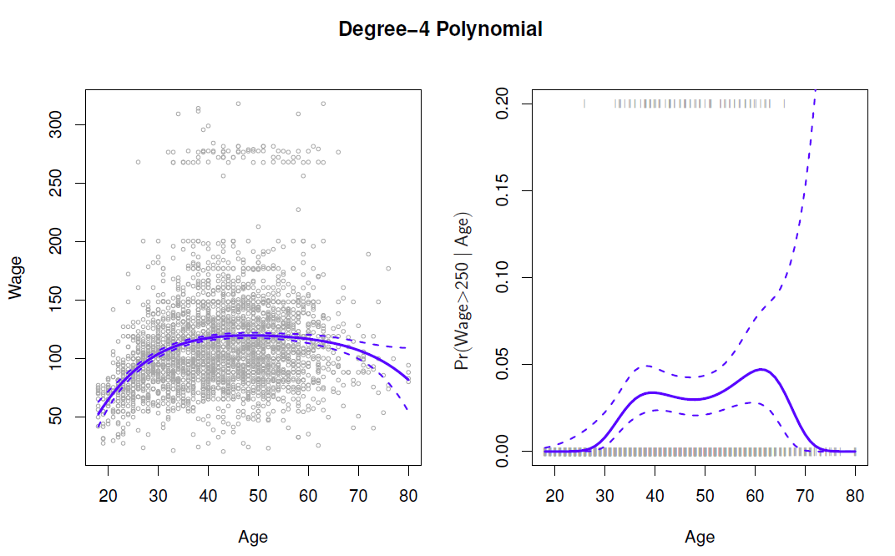
Create new variabels \(X_1=X, X_2=X^2\), etc and then treat as multiple linear regresison.
Not really interested in the coefficients; more interested in the fitted function values at any value \(x_0\):
\[ \hat{f}(x_0) = \hat{\beta}_0 +\hat{\beta_1}x_0 +\hat{\beta}_2 x_0^2 +\hat{\beta}_3 x_0^3 +\hat{\beta}_4 x_0^4 \]
Since \(\hat{f}(x_0)\) is a linear function of the \(\hat{\beta}_l\), can get a simple exression for pointwise-variances \(Var[\hat{f}(x_0)]\) at any value \(x_0\).
- In the figure we have computed the fit and pointwise standard errors aon a grid of values for \(x_0\).
- We show \(\hat{f}(x_0)\pm 2\cdot se[\hat{f}(x_0)]\).
We either fix the degree \(d\) at some reasonably low value, else use cross-validation to choose \(d\).
Logistic regression follows naturally. For esample, in figure we model
\[ Pr(y_i > 250 | x_i)= \frac{exp(\beta_0 +\beta_1x_i +\beta_2 x_i^2 + \beta_3 x_i^3 +\cdots +\beta_d x_i^d)}{1+exp(\beta_0 +\beta_1x_i +\beta_2 x_i^2 + \beta_3 x_i^3 +\cdots +\beta_d x_i^d)} \]
To get confidence intervals, compute upper and lower bounds on on the logit scale, and then invert to get on probability scale.
Can do separately on several variables - just stack the variables into one matrix, and separate out the pieces afterwards.
Caveat: polynomials have notorious tail behavior - very bad for extrapolation.
Can fit using \(y\sim poly(x, degree=3)\) in formula.
Example
- Fit a fourth order polynomial regression in the Wage data by regressing wage on the fourth order polynomial of age.
- All coefficient are statistically significant at the 5% level (the fourth order is on the border line).
library(ISLR2)
(fit <- lm(wage ~ poly(age, 4), data = Wage)) # polynomial model of order 4##
## Call:
## lm(formula = wage ~ poly(age, 4), data = Wage)
##
## Coefficients:
## (Intercept) poly(age, 4)1 poly(age, 4)2 poly(age, 4)3 poly(age, 4)4
## 111.70 447.07 -478.32 125.52 -77.91summary(fit)##
## Call:
## lm(formula = wage ~ poly(age, 4), data = Wage)
##
## Residuals:
## Min 1Q Median 3Q Max
## -98.707 -24.626 -4.993 15.217 203.693
##
## Coefficients:
## Estimate Std. Error t value Pr(>|t|)
## (Intercept) 111.7036 0.7287 153.283 < 2e-16 ***
## poly(age, 4)1 447.0679 39.9148 11.201 < 2e-16 ***
## poly(age, 4)2 -478.3158 39.9148 -11.983 < 2e-16 ***
## poly(age, 4)3 125.5217 39.9148 3.145 0.00168 **
## poly(age, 4)4 -77.9112 39.9148 -1.952 0.05104 .
## ---
## Signif. codes: 0 '***' 0.001 '**' 0.01 '*' 0.05 '.' 0.1 ' ' 1
##
## Residual standard error: 39.91 on 2995 degrees of freedom
## Multiple R-squared: 0.08626, Adjusted R-squared: 0.08504
## F-statistic: 70.69 on 4 and 2995 DF, p-value: < 2.2e-16with(Wage, plot(x = age, y = wage, pch = 20, col = "light grey", fg = "gray")) # scatter plot
## fitted regression
(age.range <- range(Wage$age)) # age range to be used to impose the fitted line## [1] 18 80## predictions, setting se.fit = true procuces also standard errors of the fitted line
wage.pred <- predict(fit, newdata = data.frame(age = age.range[1]:age.range[2]), se.fit = TRUE)
str(wage.pred)## List of 4
## $ fit : Named num [1:63] 51.9 58.5 64.6 70.2 75.4 ...
## ..- attr(*, "names")= chr [1:63] "1" "2" "3" "4" ...
## $ se.fit : Named num [1:63] 5.3 4.37 3.59 2.96 2.46 ...
## ..- attr(*, "names")= chr [1:63] "1" "2" "3" "4" ...
## $ df : int 2995
## $ residual.scale: num 39.9lines(x = age.range[1]:age.range[2], y = wage.pred$fit, col = "steel blue") # fitted line
## 95% lower bound of the fitted line
lines(x = age.range[1]:age.range[2], y = wage.pred$fit - 2 * wage.pred$se.fit, col = "red") #
## 95% upper bound
lines(x = age.range[1]:age.range[2], y = wage.pred$fit + 2 * wage.pred$se.fit, col = "red") # 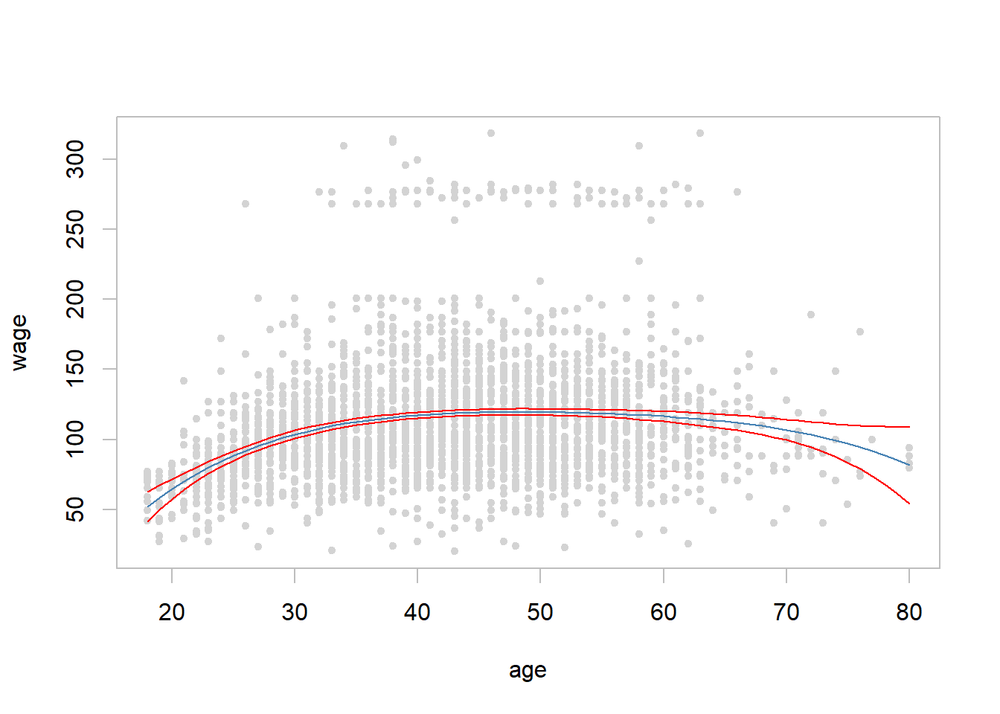
8.2 Step Functions
Polynomial functions impose global structure on \(X\).
Step functions impose local structures by converting a continuous variable into an ordered categorical variable
\[ \begin{align} C_0(x) &= I(x<c_1) \\ C_1(x) &= I(c_1 \le x<c_2) \\ C_2(x) &= I(c_2 \le x<c_3) \\ & \vdots\\ C_{K-1}(x) &= I(c_{K-1} \le x<c_K) \\ C_K(x) &=I(c_K \le x) \end{align} \]
where \(I(\cdot)\) is and indicator function that returns 1 if the condition is true, and zero otherwise.
- Because \(C_0(x)+C_1(x)+\cdots +C_K(x)=1\), \(C_0(x)\) becomes the reference class, and the dependent variable \(y\) is regressed on \(C_j(x)\), \(j=1,\ldots, K\), resulting to (a dummy variable regression)
\[ y_i = \beta_0 + \beta_1C_1(x_{i})+\beta_2C_2(x_{i})+\cdots +\beta_KC_K(x_i) +\epsilon_i \]
As class \(C_0(x)\) is the reference class, \(\beta_j\)’s indicate deviations from it.
Some example
\[ C_1(X)=I(X<35), \,\,\, C_2(X)=I(35\le X <50), \ldots , C_4(X)=I(X\ge 65) \]
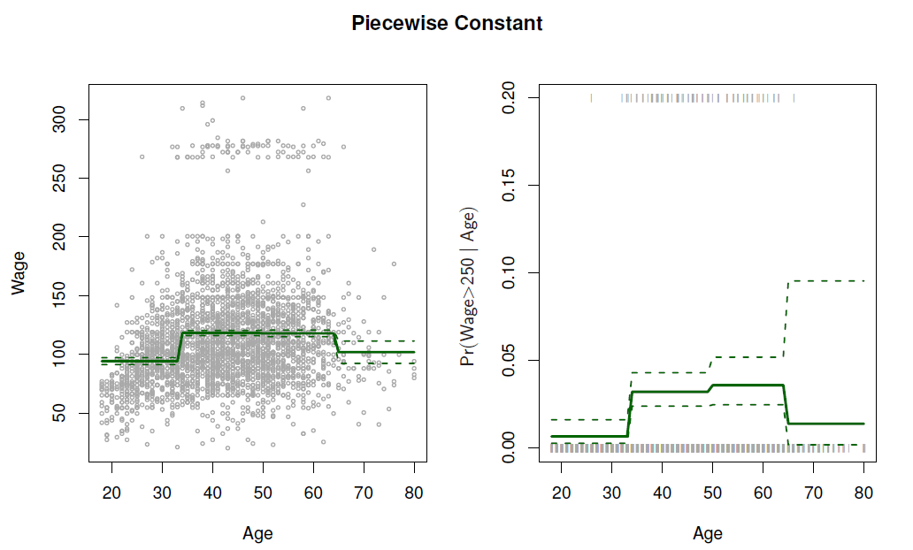
Easy to work with. Creates a series of dummy variables representing each group.
Useful way of creating interactions that are easy to interpret.
For example, interaction effect of Year and Age:
\[ I(Year<2005)\cdot Age, \,\,\, I(Year\ge 2005) \cdot Age \]
would allow for different linear functions in each age category.
In R: \(I(Year<2005)\) or \(cut(age, c(18,25,40,65,90))\).
Choice of cutpoints or knots can be problematic.
- For creating nonlinearities, smoother alternatives such as splines are available.
Example
- Divide age in four sub-intervals and fit regression on the dummy variables based on them
library(ISLR2)
## Step functions can be defined utilizing R cut() function
age4cl <- cut(Wage$age, breaks = 4) # four age classes
table(x = cut(Wage$age, breaks = 4)) # n of observations in four age classes## x
## (17.9,33.5] (33.5,49] (49,64.5] (64.5,80.1]
## 750 1399 779 72summary(fit.step <- lm(wage ~ age4cl, data = Wage)) # fit and summarize##
## Call:
## lm(formula = wage ~ age4cl, data = Wage)
##
## Residuals:
## Min 1Q Median 3Q Max
## -98.126 -24.803 -6.177 16.493 200.519
##
## Coefficients:
## Estimate Std. Error t value Pr(>|t|)
## (Intercept) 94.158 1.476 63.790 <2e-16 ***
## age4cl(33.5,49] 24.053 1.829 13.148 <2e-16 ***
## age4cl(49,64.5] 23.665 2.068 11.443 <2e-16 ***
## age4cl(64.5,80.1] 7.641 4.987 1.532 0.126
## ---
## Signif. codes: 0 '***' 0.001 '**' 0.01 '*' 0.05 '.' 0.1 ' ' 1
##
## Residual standard error: 40.42 on 2996 degrees of freedom
## Multiple R-squared: 0.0625, Adjusted R-squared: 0.06156
## F-statistic: 66.58 on 3 and 2996 DF, p-value: < 2.2e-16range(age.range <- min(Wage$age):max(Wage$age)) # age range from min to max## [1] 18 80pred.step <- predict(fit.step, newdata = data.frame(age4cl = cut(age.range, breaks = 4)),
interval = "confidence") # prediction with 95% confidence interval
with(Wage, plot(x = age, y = wage, pch = 20, col = "light grey", fg = "gray"))
lines(x = min(Wage$age):max(Wage$age), y = pred.step[,1], col = "steel blue") # fitted line
## 95% lower bound of the fitted line
lines(x = min(Wage$age):max(Wage$age), y = pred.step[,2], col = "red") #
## 95% upper bound
lines(x = min(Wage$age):max(Wage$age), y = pred.step[,3], col = "red") # 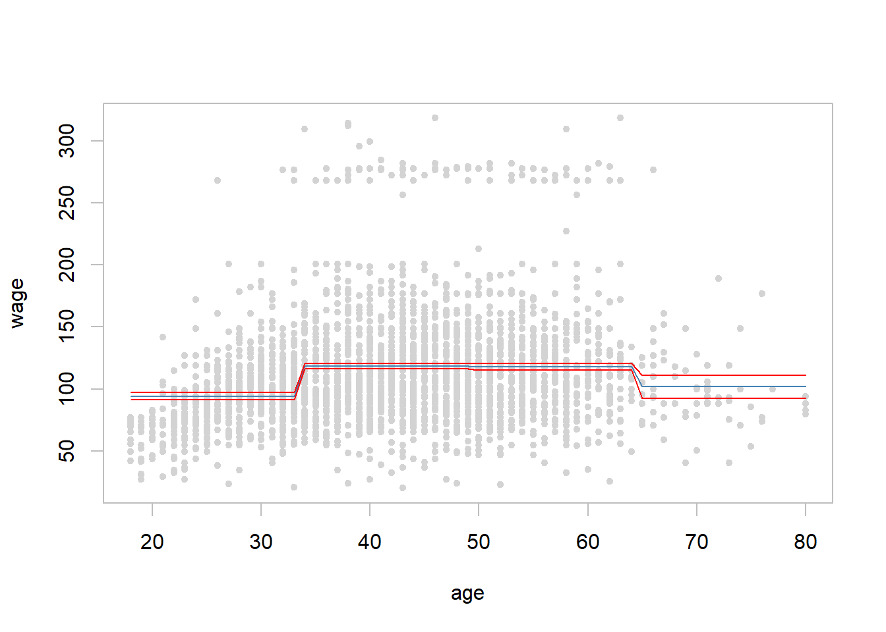
8.3 Piecewise Polynomials - Splines
- Polynomial regressions and piece-wise constant regression are special cases of a basis function approach
\[ y_i=\beta_0 +\beta_1 b_1(x_i) +\beta_2 b_2(x_i) +\cdots +\beta_{K}b_{K}(x_i) +\epsilon_i \]
where \(b_j(x_i)\) are fixed known functions, called basis functions.
For polynomial regression \(b_j(x_i)=x_i^j\) and for piecewise constant functions \(b_j(x_i)-I(c_j\le x_i < c_{j+1})\)
Other popular bassis functions are based on Fourier series, wavelets, and on different spline functions.
Instead of a single polynomial in \(X\) over its whole domain, we can rather use different polynomials in regions defined by knots.
E.g. (see below figure)
\[ y_i= \begin{cases} \beta_{01}+\beta_{11}x_i +\beta_{21}x_i^2 +\beta_{31}x_i^3 +\epsilon, \,\,\, if \,\,\, x_i<c \\ \beta_{02}+\beta_{12}x_i +\beta_{22}x_i^2 +\beta_{32}x_i^3 +\epsilon, \,\,\, if \,\,\, x_i\ge c\\ \end{cases} \]
Better to add constraints to the polynomials, e.g. continuity.
Splines have the “maximum” amount of continuity.
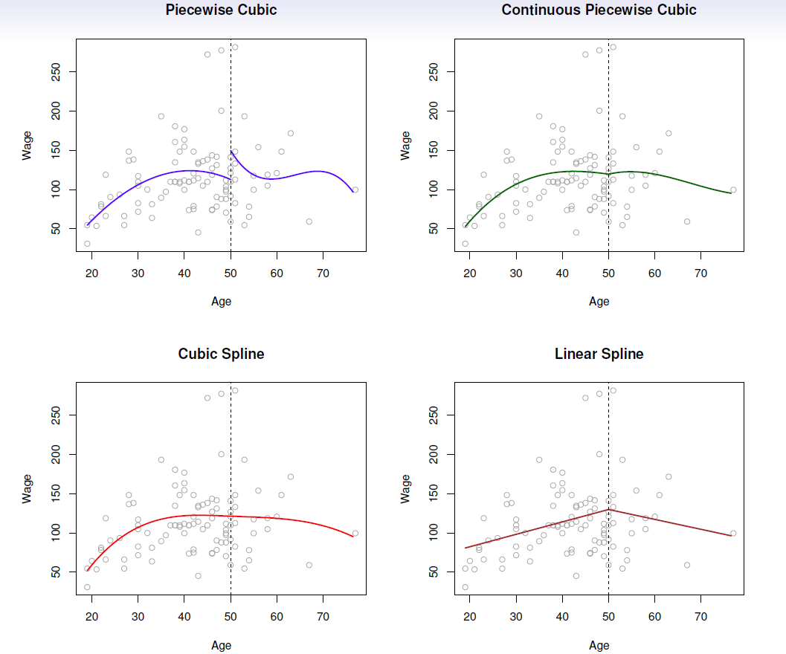
Linear splines
A linear spline with knots at \(\xi_k\), \(k=1,\ldots, K\) is a piecewise linear polynomial continuous at each knot.
We can represent this model as
\[ y_i=\beta_0 +\beta_1 b_1(x_i) +\beta_2 b_2(x_i) +\cdots +\beta_{K+1}b_{K+1}(x_i) +\epsilon_i \]
where the \(b_k\) are basis functions.
\[ \begin{align} b_1(x_i) &= x_i \\ b_{k+1}(x_i) &= (x_i-\xi_k)_+, \,\,\, k=1,\ldots, K \end{align} \]
- Here the \(( )_+\) means positive part; i.e.
\[ (x_i-\xi_k)_+ =\begin{cases} x_i-\xi_k, \,\,\, if \,\,\, x_i>\xi_k \\ 0, \,\,\, otherwise \end{cases} \]
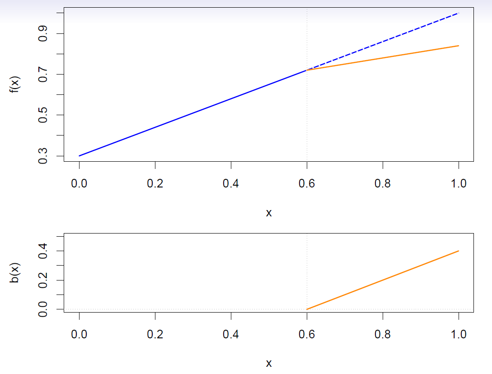
Cubic splines
A cubic spline with knots at \(\xi_k\), \(k=1,\ldots, K\) is a piecewise cubic polynomial with continuous derivatives up to order 2 at each knot.
Again we can represent this model with truncated power basis functions
\[ y_i=\beta_0 +\beta_1 b_1(x_i) +\beta_2 b_2(x_i) +\cdots +\beta_{K+1}b_{K+1}(x_i) +\epsilon_i \]
\[ \begin{align} b_1(x_i) &= x_i \\ b_2(x_i) &= x_i^2\\ b_3(x_i) &= x_i^3\\ b_{k+3}(x_i) &= (x_i-\xi_k)_+^3, \,\,\, k=1,\ldots, K \end{align} \]
where
\[ (x_i-\xi_k)_+^3 =\begin{cases} (x_i-\xi_k)^3, \,\,\, if \,\,\, x_i>\xi_k \\ 0, \,\,\, otherwise \end{cases} \]
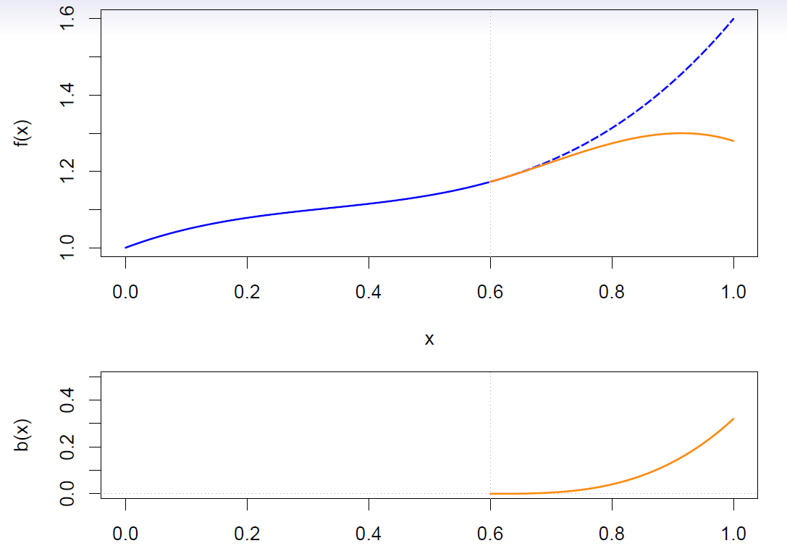
Natural cubic splines
A natural cubic spline extrapolates linearly beyond the boundary knots.
This adds \(4=2\times 2\) extra constrains, and allows us to put more internal knots for the same degrees of freedom as a regular cubic spline.
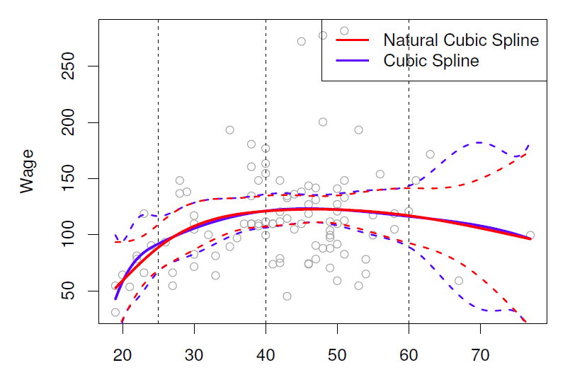
- Fitting splines in R is easy: bs(x, …) for any degree splines, and ns(x, …) for natural cubic splines, in package splines.
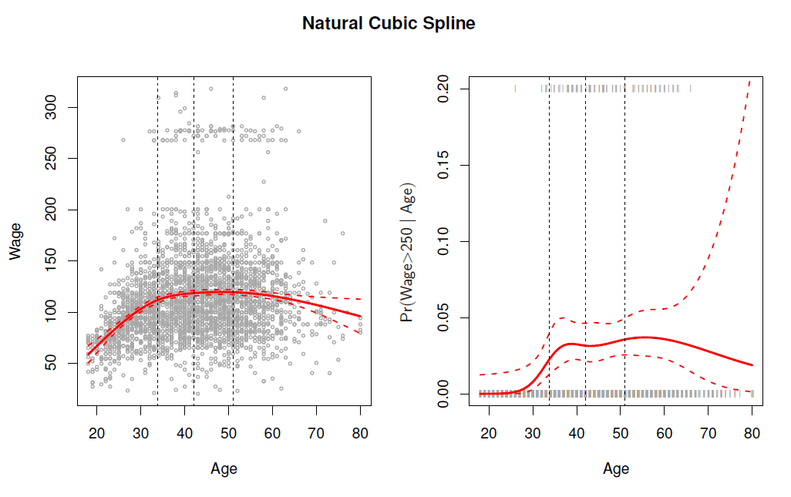
Knot placement
One strategy is to decide \(K\), the number of Knots, and then place them at appropriate quantiles of the observed \(X\).
A cubic spline with \(K\) knots has \(K+4\) parameters or degrees of freedom.
A natural spline with \(K\) knots has \(K\) degrees of freedom.
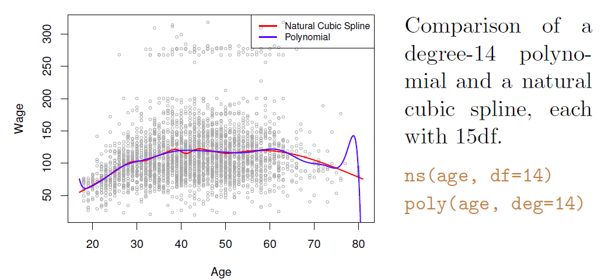
- Example
- Splines in R can be fitted utilizing splines package which is part of the base package and is therefore readily available.
- Function bs() generates basis functions for splines with the specified set of knots.
- Fitting in the Work data set wage on spline function of age with three knots at \(\xi_1=25, \xi_2=40\), and \(\xi_3=60\).
library(ISLR2)
library(splines)
fit.bs <- lm(wage ~ bs(age, knots = c(25, 40, 60)), data = Wage) # spline regression
summary(fit.bs)##
## Call:
## lm(formula = wage ~ bs(age, knots = c(25, 40, 60)), data = Wage)
##
## Residuals:
## Min 1Q Median 3Q Max
## -98.832 -24.537 -5.049 15.209 203.207
##
## Coefficients:
## Estimate Std. Error t value Pr(>|t|)
## (Intercept) 60.494 9.460 6.394 1.86e-10 ***
## bs(age, knots = c(25, 40, 60))1 3.980 12.538 0.317 0.750899
## bs(age, knots = c(25, 40, 60))2 44.631 9.626 4.636 3.70e-06 ***
## bs(age, knots = c(25, 40, 60))3 62.839 10.755 5.843 5.69e-09 ***
## bs(age, knots = c(25, 40, 60))4 55.991 10.706 5.230 1.81e-07 ***
## bs(age, knots = c(25, 40, 60))5 50.688 14.402 3.520 0.000439 ***
## bs(age, knots = c(25, 40, 60))6 16.606 19.126 0.868 0.385338
## ---
## Signif. codes: 0 '***' 0.001 '**' 0.01 '*' 0.05 '.' 0.1 ' ' 1
##
## Residual standard error: 39.92 on 2993 degrees of freedom
## Multiple R-squared: 0.08642, Adjusted R-squared: 0.08459
## F-statistic: 47.19 on 6 and 2993 DF, p-value: < 2.2e-16age.grid <- min(Wage$age):max(Wage$age) # age grid for plotting the fitted line
pred.bs <- predict(fit.bs,
newdata = data.frame(age = age.grid),
interval = "confidence") # produce confidence interval for the line
head(pred.bs) # a few first lines of the regression fit and confidence interval## fit lwr upr
## 1 60.49371 41.94418 79.04325
## 2 62.71254 51.68291 73.74217
## 3 65.81602 58.41249 73.21956
## 4 69.59243 63.05391 76.13096
## 5 73.83004 67.51567 80.14442
## 6 78.31713 72.58930 84.04495## natrural spline fit
fit.ns <- lm(wage ~ ns(age, knots = c(25, 40, 60)), data = Wage) # natural spline
summary(fit.ns)##
## Call:
## lm(formula = wage ~ ns(age, knots = c(25, 40, 60)), data = Wage)
##
## Residuals:
## Min 1Q Median 3Q Max
## -98.733 -24.761 -5.187 15.216 204.965
##
## Coefficients:
## Estimate Std. Error t value Pr(>|t|)
## (Intercept) 54.760 5.138 10.658 < 2e-16 ***
## ns(age, knots = c(25, 40, 60))1 67.402 5.013 13.444 < 2e-16 ***
## ns(age, knots = c(25, 40, 60))2 51.383 5.712 8.996 < 2e-16 ***
## ns(age, knots = c(25, 40, 60))3 88.566 12.016 7.371 2.18e-13 ***
## ns(age, knots = c(25, 40, 60))4 10.637 9.833 1.082 0.279
## ---
## Signif. codes: 0 '***' 0.001 '**' 0.01 '*' 0.05 '.' 0.1 ' ' 1
##
## Residual standard error: 39.92 on 2995 degrees of freedom
## Multiple R-squared: 0.08588, Adjusted R-squared: 0.08466
## F-statistic: 70.34 on 4 and 2995 DF, p-value: < 2.2e-16pred.ns <- predict(fit.ns, newdata = data.frame(age = age.grid)) # natural spline fit
## plot results
with(Wage, plot(x = age, y = wage, col = "light gray",
xlab = "Age", ylab = "Wage",
main = "Regression Spline with Three Knots")) # scatter plot
lines(x = age.grid, y = pred.bs[, 1], col = "steel blue") # basis spline fitted line
lines(x = age.grid, y = pred.bs[, 2], lty = "dashed", col = "red") # l95 bs regression
lines(x = age.grid, y = pred.bs[, 3], lty = "dashed", col = "red") # u95 bs regression
lines(x = age.grid, y = pred.ns, col = "green", lwd = 2) # natural spline fitted line
abline(v = c(25, 40, 60), col = "grey", lty = "dashed")
legend("topright", legend = c("Basis Spline", "+/-2 std err (bs)", "Natural Spline"),
lty = c("solid", "dashed", "solid"),
col = c("steel blue", "red", "green"), bty = "n")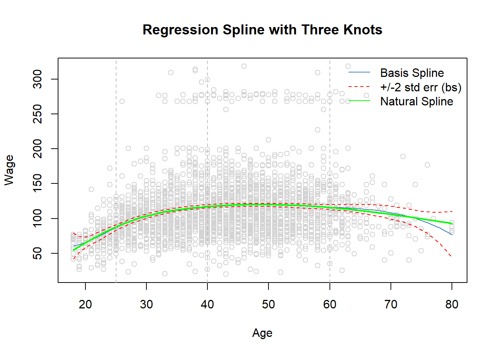
Instead of defining knots in bs() or ns() we can define the degrees of freedom, df, which defines equal spaced knots.
Recall, in cubic spline estimates \(K+4\) parameters of which one is the intercept.
Accordingly with \(K=3\) knots df is set to 6 in bs().
In the natural spline the function is required to be linear in the boundary which reduces the number of estimated parameters by 2.
Therefore for \(K=3\) knots df is 4 in ns()
## basis spline
dim(bs(Wage$age, knots = c(25, 40, 60))) # predefined knots## [1] 3000 6dim(bs(Wage$age, df = 6)) # equal spaced knots## [1] 3000 6attr(bs(Wage$age, df = 6), which = "knots") ## 25% 50% 75%
## 33.75 42.00 51.00attr(bs(Wage$age, knots = c(25, 40, 60)), which = "knots")## [1] 25 40 60## natural spline
dim(ns(Wage$age, knots = c(25, 40, 60))) # predefined knots## [1] 3000 4dim(ns(Wage$age, df = 4)) # equal spaced knots## [1] 3000 4attr(ns(Wage$age, knots = c(25, 40, 60)), which = "knots")## [1] 25 40 60attr(ns(Wage$age, df = 4), which = "knots")## 25% 50% 75%
## 33.75 42.00 51.00##
args(bs) ## arguments of bs() function## function (x, df = NULL, knots = NULL, degree = 3, intercept = FALSE,
## Boundary.knots = range(x))
## NULL- Finally, by the degree parameter in bs() and ns() functions, the degree of the piecewise polynomial can be defined (default is 3, i.e., cubic)
Smmothing splines
This section is a little bit mathematical.
Consider this criterion for fitting a smooth function \(g(x)\) to some data:
\[ minimize_{g\in S} \sum_{i=1}^n (y_i-g(x_i))^2 +\lambda \int g''(t)^2 dt \]
The first term is RSS, and tries to make \(g(x)\) match the data at each \(x_i\).
The second term is a roughness penalty and controls how wiggly \(g(x)\) is.
It is modulated by the tuning parameter \(\lambda \ge 0\).
- The smaller \(\lambda\), the more wiggly the function, eventually interpolating \(y_i\) when \(\lambda=0\).
- As \(\lambda \rightarrow \infty\), the function \(g(x)\) becomes linear.
The solution is a natural cubic spline, with a knot at every unique value of \(x_i\).
The roughness penalty still controls the roughness via \(\lambda\).
Some details
- Smoothing splines avoid the knot-selection issue, leaving a single \(\lambda\) to be chosen.
- The algorithmic details are too complex to describe here. In R, the function smooth.spline() will fit a smoothing spline.
- The vector of \(n\) fitted values can be written as \(\hat{g}_{\lambda}=S_{\lambda}y\), where \(S_{\lambda}\) is a \(n\times n\) matrix (determined by the \(x_i\) and \(\lambda\)).
- The effective degrees of freedom are given by
\[ df_{\lambda}=\sum_{i=1}^n \{S_{\lambda}\}_{ii} \]
- We can specify \(df\) rather then \(\lambda\)!
- In R: smooth.spline(age, wage, df=10)
- The leave-one-out (LOO) cross-validated error is given by
\[ RSS_{cv}(\lambda)=\sum_{i=1}^n (y_i-\hat{g}_{\lambda}^{(-1)}(x_i))^2=\sum_{i=1}^n [\frac{y_i-\hat{g}_{\lambda}(x_i)}{1-\{S_{\lambda}\}_{ii}}]^2 \]
- In R: smooth.spline(age, wage)
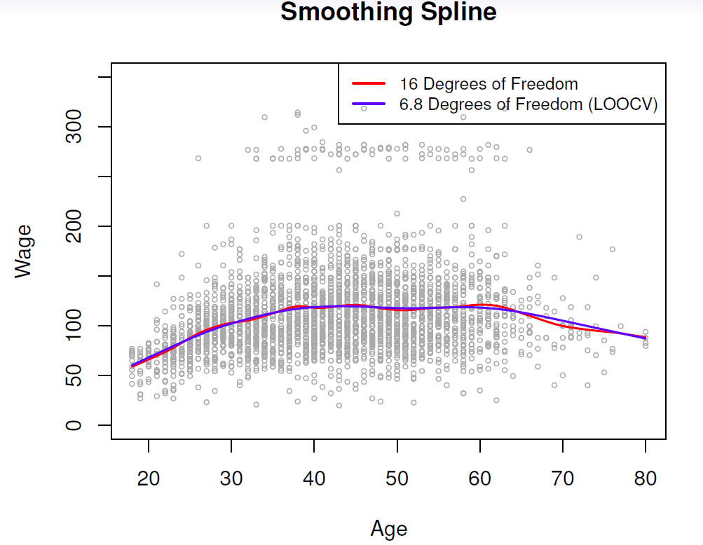
- Example
- Continuing with the Wage data, fitting smoothing splines can be performed by smooth.spline() function in the splines package.
library(ISLR2)
library(splines)
#help(smooth.spline) # see some help
fit.smooth <- smooth.spline(x = Wage$age, y = Wage$wage, df = 16) # fixed number of 16 knots
fit.smooth2 <- smooth.spline(x = Wage$age, y = Wage$wage, cv = TRUE) # LOOCV## Warning in smooth.spline(x = Wage$age, y = Wage$wage, cv = TRUE): cross-
## validation with non-unique 'x' values seems doubtfulfit.smooth3 <- smooth.spline(x = Wage$age, y = Wage$wage) # dafaul 'generalized CV'
round(fit.smooth2$df, digits = 1)## [1] 6.8round(fit.smooth3$df, digits = 1)## [1] 6.5with(Wage, plot(x = age, y = wage,
cex = .5, # reduce the size of the plotting symbol to one half
col = "grey",
xlab = "Age", ylab = "Wage",
main = "Smoothing Spline"))
lines(fit.smooth, col = "steel blue", lwd = 2) # fitted line, lwd = 2 doubles the line thickness
lines(fit.smooth2, col = "red", lwd = 2) # LOOCV
## lines(fit.smooth3, col = "green", lwd = 2) # 'generalized' CV, not shown as almost identical
# to LOOCV
legend("topright", legend = c(paste("Fixed", round(fit.smooth$df, 0), "df"),
paste("LOOCV", round(fit.smooth2$df, 1), "df")),
col = c("steel blue", "red"), lty = "solid", lwd = 2, bty = "n")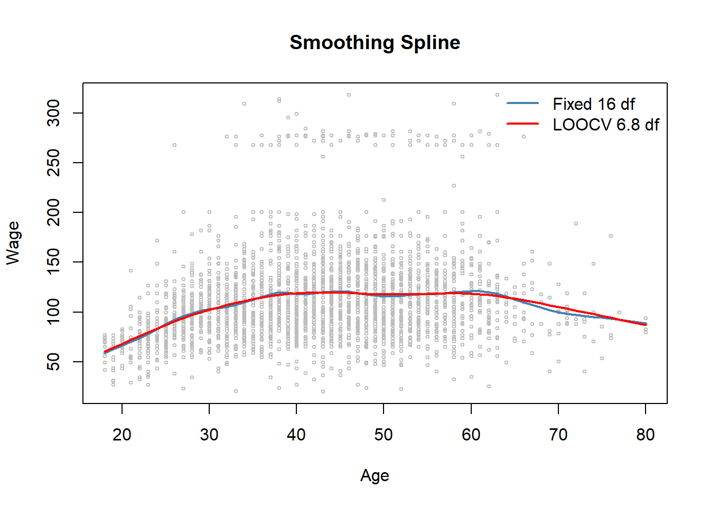
## dev.print(pdf, file = "ex64.pdf") # pdf copy
## lambdas
fit.smooth$lambda # fixed df## [1] 0.0006537868fit.smooth2$lambda # LOOCV## [1] 0.02792303fit.smooth3$lambda # 'generalized' CV## [1] 0.03486278.4 Local Regression
Loal regression gives another approach for fitting flexible non-linear functions.
The general idea is to fit weighted least squares in the neighboring points around a given point \(x_0\).
The (relative) number of points around which the (weighted) least squares is applied is defined by the span parameter \(s\).
The weighting function \(K_{i0}\) is often referred to as the weight function.
The graph below illustrates the idea of local regressions for a simulated data, the yellow areas refers to the weighting function, the blue line is the underlying true function \(f(x)\), the orange is the fitted local regression estimate \(\hat{f}(x)\), and the red lines refer to the local weighted regressions around the particular \(x\) value.
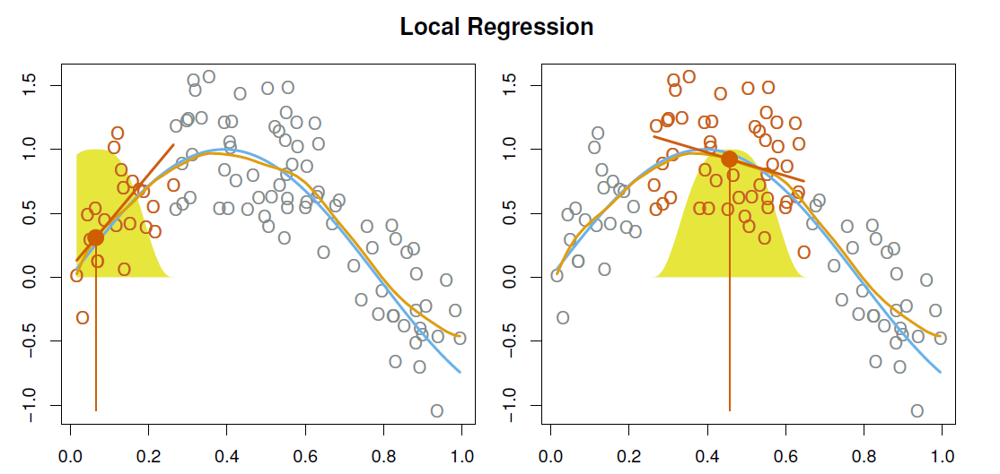
With a sliding weight function, we fit separate linear fits over the range of \(X\) by weighted least squares.
See test for more details, and loess() function in R.
Example
- Local regressions with span values 0.2 and 0.5
library(ISLR2)
## use loess (localally estimated scatter plot smoother) function to fit a locall regression
## R has also lowess (locally weighted scatter plot smoother)
#help(loess) # help for loess
#help(lowess) # help for lowess
fit.loess02 <- loess(wage ~ age, data = Wage, span = .2)
fit.loess05 <- loess(wage ~ age, data = Wage, span = .5)
age.grid <- min(Wage$age):max(Wage$age) # needed for prediction to plot fitted lines
with(data = Wage, plot(x = age, y = wage, cex = .5, col = "grey",
xlab = "Age", ylab = "Wage",
main = "Local Regression"))
lines(x = age.grid, predict(fit.loess02, newdata = data.frame(age = age.grid)), lwd = 2,
col = "red") # loess with s = .2
lines(x = age.grid, predict(fit.loess05, newdata = data.frame(age = age.grid)), lwd = 2,
col = "blue") # s = .5
legend("topright", legend = c("span = 0.2", "span = 0.5"), col = c("red", "blue"),
lwd = 2, lty = "solid", bty = "n")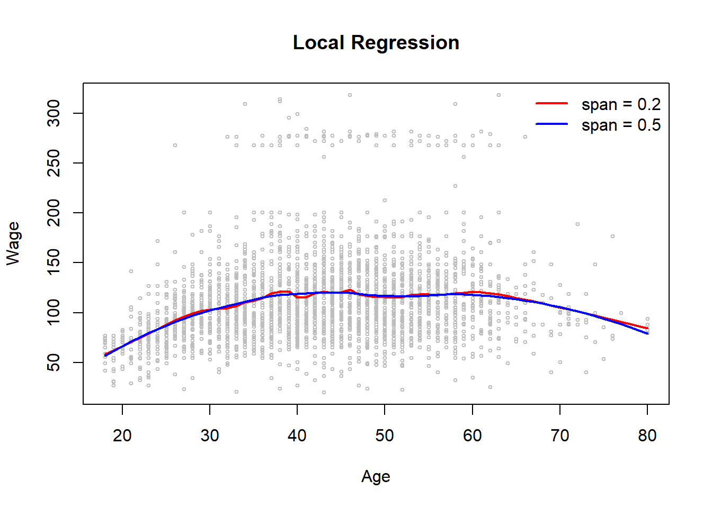
8.5 Generalized Additive Models
Generalizes additive models (GAMs) deal with multiple regression with several predictors, \(x_1, \ldots, x_p\) by allowing nonlinear functions of each predictor, while maintaining additivity.
Allows for flexible nonlinearities in several variables, but retains the additive structure of linear models.
\[ y_i=\beta_0 +f_1 (x_{i1})+f_2 (x_{i2})+\cdots +f_p(x_{ip})+\epsilon \]
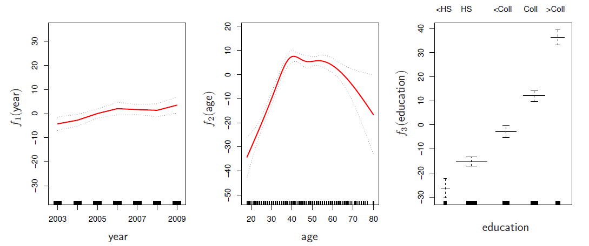
Can fit a GAM simply using, e.g. natural splines:
- lm(wage ~ ns(year, df=5) + ns(age, df=5) + education)
Coefficients not that interesting; fitted functions are. The previous plot was produced using plot.gam.
Can mix terms - some linear, some nonlinear - and use anova() to compare models.
Can use smoothing splines or local regression as well:
- gam(wage ~ s(year, df=5) + lo(age, span=.5) + education)
GAMs are additive, although low-order interactions can be included in a natural way using, e.g. bivariate smoothers or interactions of the form ns(age, df=5):ns(year, df=5)
GAMs for classification
\[ log(\frac{p(X)}{1-p(X)})=\beta_0 +f_1(X_1) +f_2(X_2) +\cdots +f_p(X_p) \]
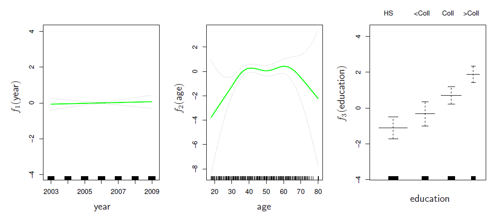
gam(I(wage>250) ~ year + s(age, df=5) + education, family=binomial)
Example
- Consider again the Wage data and fit the model
\[ wage =\beta_0 +f_1(year)+f_2(age)+f_3(education)+\epsilon \] utilizing natural splines.
- year and age are quantitative and education is qualitative with five levels (less than hs, hs, some college, college, advanced).
library(ISLR2)
library(splines)
library(help = splines)
str(Wage)## 'data.frame': 3000 obs. of 11 variables:
## $ year : int 2006 2004 2003 2003 2005 2008 2009 2008 2006 2004 ...
## $ age : int 18 24 45 43 50 54 44 30 41 52 ...
## $ maritl : Factor w/ 5 levels "1. Never Married",..: 1 1 2 2 4 2 2 1 1 2 ...
## $ race : Factor w/ 4 levels "1. White","2. Black",..: 1 1 1 3 1 1 4 3 2 1 ...
## $ education : Factor w/ 5 levels "1. < HS Grad",..: 1 4 3 4 2 4 3 3 3 2 ...
## $ region : Factor w/ 9 levels "1. New England",..: 2 2 2 2 2 2 2 2 2 2 ...
## $ jobclass : Factor w/ 2 levels "1. Industrial",..: 1 2 1 2 2 2 1 2 2 2 ...
## $ health : Factor w/ 2 levels "1. <=Good","2. >=Very Good": 1 2 1 2 1 2 2 1 2 2 ...
## $ health_ins: Factor w/ 2 levels "1. Yes","2. No": 2 2 1 1 1 1 1 1 1 1 ...
## $ logwage : num 4.32 4.26 4.88 5.04 4.32 ...
## $ wage : num 75 70.5 131 154.7 75 ...levels(Wage$education)## [1] "1. < HS Grad" "2. HS Grad" "3. Some College"
## [4] "4. College Grad" "5. Advanced Degree"gam1 <- lm(wage ~ ns(year, df = 4) + ns(age, df = 5) + education, data = Wage) # natural splines
summary(gam1) # regression summary##
## Call:
## lm(formula = wage ~ ns(year, df = 4) + ns(age, df = 5) + education,
## data = Wage)
##
## Residuals:
## Min 1Q Median 3Q Max
## -120.513 -19.608 -3.583 14.112 214.535
##
## Coefficients:
## Estimate Std. Error t value Pr(>|t|)
## (Intercept) 46.949 4.704 9.980 < 2e-16 ***
## ns(year, df = 4)1 8.625 3.466 2.488 0.01289 *
## ns(year, df = 4)2 3.762 2.959 1.271 0.20369
## ns(year, df = 4)3 8.127 4.211 1.930 0.05375 .
## ns(year, df = 4)4 6.806 2.397 2.840 0.00455 **
## ns(age, df = 5)1 45.170 4.193 10.771 < 2e-16 ***
## ns(age, df = 5)2 38.450 5.076 7.575 4.78e-14 ***
## ns(age, df = 5)3 34.239 4.383 7.813 7.69e-15 ***
## ns(age, df = 5)4 48.678 10.572 4.605 4.31e-06 ***
## ns(age, df = 5)5 6.557 8.367 0.784 0.43328
## education2. HS Grad 10.983 2.430 4.520 6.43e-06 ***
## education3. Some College 23.473 2.562 9.163 < 2e-16 ***
## education4. College Grad 38.314 2.547 15.042 < 2e-16 ***
## education5. Advanced Degree 62.554 2.761 22.654 < 2e-16 ***
## ---
## Signif. codes: 0 '***' 0.001 '**' 0.01 '*' 0.05 '.' 0.1 ' ' 1
##
## Residual standard error: 35.16 on 2986 degrees of freedom
## Multiple R-squared: 0.293, Adjusted R-squared: 0.2899
## F-statistic: 95.2 on 13 and 2986 DF, p-value: < 2.2e-16##
## Marginal effects
##
year.grid <- min(Wage$year):max(Wage$year)
age.grid <- min(Wage$age):max(Wage$age)
## Year effect at the mean of age and education level "College Grad" (level 4)
pred.wage1 <- predict(gam1, newdata = data.frame(year = year.grid,
age = mean(Wage$age),
education = levels(Wage$education)[4]),
interval = "confidence") # year effect
## Age effect at the mean of year (or we could just fix year to some fixed value, e.g., 2005)
## and education level "College Grad"
pred.wage2 <- predict(gam1, newdata = data.frame(age = age.grid,
year = mean(Wage$year),
education = levels(Wage$education)[4]),
interval = "confidence") # age effect
## Education effect at the mean age and mean year value
pred.wage3 <- predict(gam1, newdata = data.frame(age = mean(Wage$age),
year = mean(Wage$year),
education = levels(Wage$education)),
interval = "confidence")
par(mfrow = c(1, 3)) # split graph window into tree segemnts
## Year marginal effect plot
with(Wage, plot(x = year, y = wage, cex = .5, col = "grey",
xlab = "Year", ylab = "Log(Wage)", main = "Marginal Effect of Year"))
lines(x = year.grid, y = pred.wage1[, 1], col = "red")
lines(x = year.grid, y = pred.wage1[, 2], col = "steel blue", lty = "dashed")
lines(x = year.grid, y = pred.wage1[, 3], col = "steel blue", lty = "dashed")
## Age marginal effect plot
with(Wage, plot(x = age, y = wage, cex = .5, col = "grey",
xlab = "Age", ylab = "Wage", main = "Marginal Effect of Age"))
lines(x = age.grid, y = pred.wage2[, 1], type = "l", col = "red")
lines(x = age.grid, y = pred.wage2[, 2], lty = "dashed", col = "steel blue")
lines(x = age.grid, y = pred.wage2[, 3], lty = "dashed", col = "steel blue")
## Education marginal effect plot
with(Wage, plot(x = education, y = wage, xlab = "Education", ylab = "Wage",
main = "Marginal Effect of Education")) # education effect
lines(x = 1:5, y = pred.wage3[, 1], col = "red")
lines(x = 1:5, y = pred.wage3[, 2], col = "steel blue", lty = "dashed")
lines(x = 1:5, y = pred.wage3[, 3], col = "steel blue", lty = "dashed")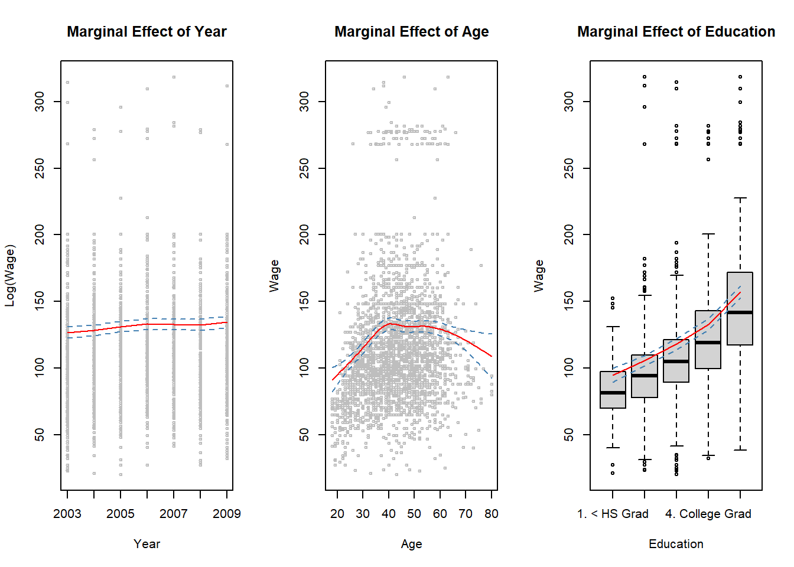
##
##dev.print(pdf, file = "ex66.pdf")
##
#install.packages(pkgs = "gam", repos = "https://cran.uib.no")
library(gam)
#library(help = gam) # some info about gam library
## utilize plot.Gam to produce graphs between each normal spline features and respnse
par(mfrow = c(1, 3))
plot.Gam(gam1, se = TRUE, ylim = c(-30, 30), col = "red",
ylab = "f(year)", terms = attr(gam1$terms, which = "term.labels")[1])
plot.Gam(gam1, se = TRUE, ylim = c(-50, 30), col = "red",
ylab = "f(age)", terms = attr(gam1$terms, which = "term.labels")[2])
plot.Gam(gam1, se = TRUE, ylim = c(-50, 30), col = "red",
ylab = "f(education)", terms = attr(gam1$terms, which = "term.labels")[3])## dev.print(pdf, file = "ex66b.pdf")
## plot.Gam(gam1, se = TRUE, col = "red") # produces a bit messier graphs
gam2 <- gam(wage ~ s(year, df = 4) + s(age, df = 5) + education, data = Wage)
summary(gam2)##
## Call: gam(formula = wage ~ s(year, df = 4) + s(age, df = 5) + education,
## data = Wage)
## Deviance Residuals:
## Min 1Q Median 3Q Max
## -119.43 -19.70 -3.33 14.17 213.48
##
## (Dispersion Parameter for gaussian family taken to be 1235.69)
##
## Null Deviance: 5222086 on 2999 degrees of freedom
## Residual Deviance: 3689770 on 2986 degrees of freedom
## AIC: 29887.75
##
## Number of Local Scoring Iterations: NA
##
## Anova for Parametric Effects
## Df Sum Sq Mean Sq F value Pr(>F)
## s(year, df = 4) 1 27162 27162 21.981 2.877e-06 ***
## s(age, df = 5) 1 195338 195338 158.081 < 2.2e-16 ***
## education 4 1069726 267432 216.423 < 2.2e-16 ***
## Residuals 2986 3689770 1236
## ---
## Signif. codes: 0 '***' 0.001 '**' 0.01 '*' 0.05 '.' 0.1 ' ' 1
##
## Anova for Nonparametric Effects
## Npar Df Npar F Pr(F)
## (Intercept)
## s(year, df = 4) 3 1.086 0.3537
## s(age, df = 5) 4 32.380 <2e-16 ***
## education
## ---
## Signif. codes: 0 '***' 0.001 '**' 0.01 '*' 0.05 '.' 0.1 ' ' 1## plot(gam2, se = TRUE, col = "red") # calls plot.Gam, again does not work
par(mfrow = c(1, 3))
plot(gam2, se = TRUE, ylim = c(-30, 30), col = "red",
ylab = "f(year)", terms = attr(gam2$terms, which = "term.labels")[1])
plot(gam2, se = TRUE, ylim = c(-50, 30), col = "red",
ylab = "f(age)", terms = attr(gam2$terms, which = "term.labels")[2])
plot(gam2, se = TRUE, ylim = c(-50, 30), col = "red",
ylab = "f(education)", terms = attr(gam2$terms, which = "term.labels")[3])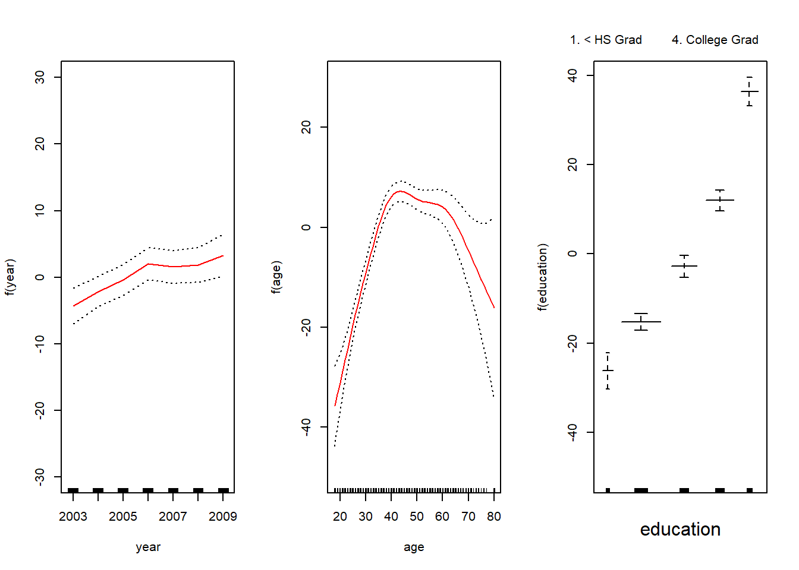
## dev.print(pdf, file = "ex66c.pdf")
#help(lo)
##
## testing the effect of year on wage
##
m1 <- gam(wage ~ s(age, df = 5) + education, data = Wage) # year removed
m2 <- gam(wage ~ year + s(age, df = 5) + education, data = Wage) # year's linear effect
m3 <- gam(wage ~ s(year, df = 4) + s(age, df = 5) + education, data = Wage) # same as gam2
anova(m1, m2, m3, test = "F")## Analysis of Deviance Table
##
## Model 1: wage ~ s(age, df = 5) + education
## Model 2: wage ~ year + s(age, df = 5) + education
## Model 3: wage ~ s(year, df = 4) + s(age, df = 5) + education
## Resid. Df Resid. Dev Df Deviance F Pr(>F)
## 1 2990 3711731
## 2 2989 3693842 1 17889.2 14.4771 0.0001447 ***
## 3 2986 3689770 3 4071.1 1.0982 0.3485661
## ---
## Signif. codes: 0 '***' 0.001 '**' 0.01 '*' 0.05 '.' 0.1 ' ' 1